Screenshots show sample content from the Idle test drive in a prerelease build, version 1.3.0 (1), using Dark appearance and Alpine White. Your app may look different. Learn about the test drive.
Edit your profile details
Open Profile from the bottom navigation, then choose Edit. Review your Name, Username, Home base, and Bio.
Scroll for Profile style and your social links. Use Save when your edits are ready, or Cancel to leave without applying them.
Profile style includes a verification-badge colour, avatar ring, and banner accent where available. Some options may require an eligible membership. See Profile badges and Idle Plus and Pro.
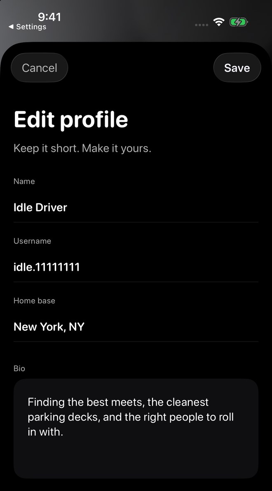
Open your garage
On your profile, choose Garage, then Open to enter My Garage. Tap a vehicle for its details.
The primary vehicle is marked Primary and can appear around Idle next to your name. Swipe a vehicle left to reveal Edit and Delete; review carefully before changing or removing a vehicle.
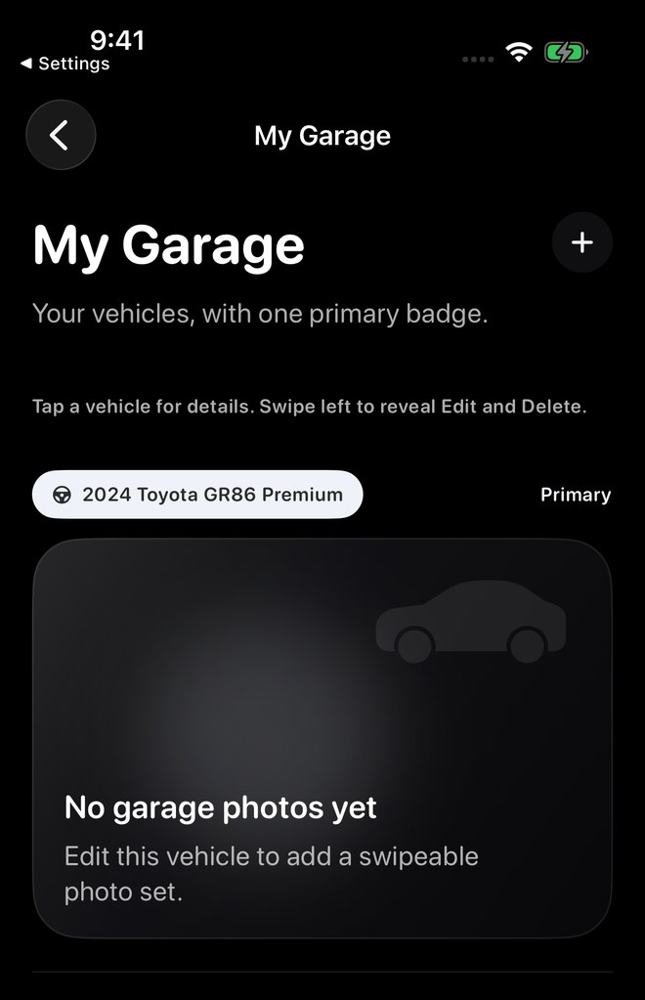
Add a vehicle
Use the + control in My Garage to open the vehicle form. Review Car or Bike, then add the year, make, model, and trim where available.
The form also has Make primary and Add photos entries. Choose clear photos and, if you use plate blur, position it over the plate before saving the garage photo.
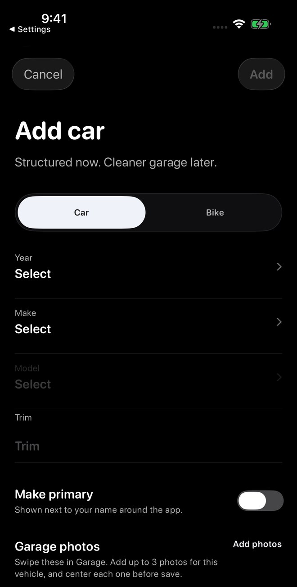
Document Build & Performance
Open a vehicle, scroll to Build & Performance, and choose Manage.
- Add ModificationRecord the part, category, brand, and useful installation details. A supporting-photo entry is available.
- Add Power FigureRecord how the figure was determined and whether it is wheel or crank output.
- Add Performance ResultRecord the measurement and run details, with optional photo proof where supported.
Build & Performance is an enthusiast record. Values are entered by the vehicle owner and are not verified by Idle. A proof attachment does not itself verify a claim.
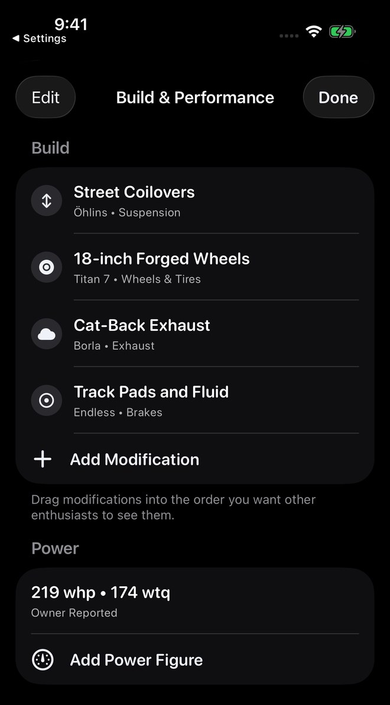
Keep power figures in context
The Add Power Figure form separates the reporting method, Wheel or Crank, horsepower and torque, and setup notes.
Enter only the values you intend to report, with enough context to make them understandable. The form explicitly says user-added figures are not officially verified.
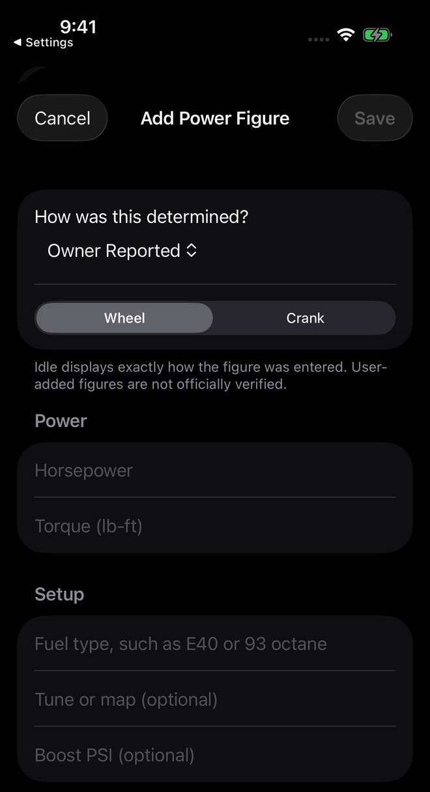
Find the vehicle’s fuel tools
In vehicle details, scroll to Vehicle Tools. The captured screen has Fuel Type and Ethanol Calculator entries.
Saved fuel details can make blend planning faster. Review your own saved values before using them. Read E85 and fuel tools for calculator guidance.
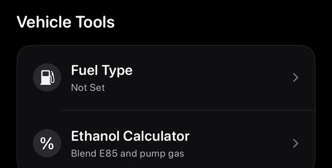
Control what appears on your profile
From Home, open your avatar sidebar, then Settings → Privacy & Safety. In Visible on profile, review Show full name, Show city, Show primary vehicle, Show social links, and Show attendance publicly.
Separate profile-access choices include Everyone, Connections only, and Hidden. Choose the settings appropriate for what you want others to see.
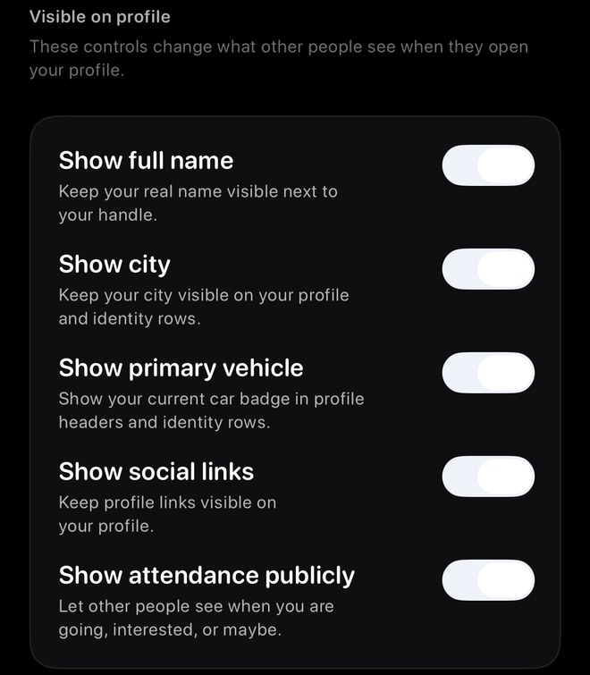
Save and check a profile name
Choose Profile → Edit, change Name, and tap Save. Check the profile heading and reopen Edit if you want to review the stored value.
The fictional display name Idle Demo Driver appeared on the profile and remained in the reopened local form. Username, home base, and bio were unchanged; username validation and real-account persistence were not tested.

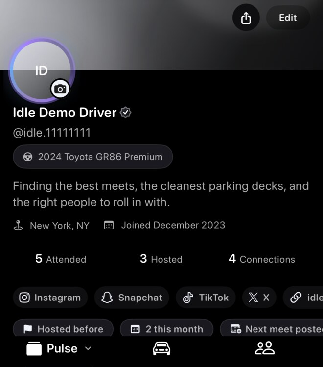
Save a Build record with its installation status
Open Garage → Open → your vehicle → Build & Performance → Manage → Add Modification. Enter the record details, review Currently installed, and choose Save.
The fictional Demo sample part record explicitly says no physical modification was made and has Currently installed off. No photo or installation date was added.

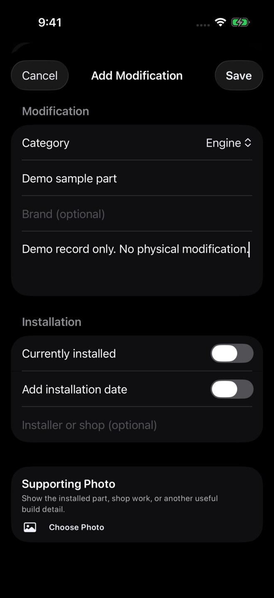
Check the record in your Build list
After saving, check that the new record appears under Build. Here Demo sample part appeared as a fifth local record under Engine.
The power values below it remain owner-reported sample data. No part was physically installed, and no power figure or performance result was saved.

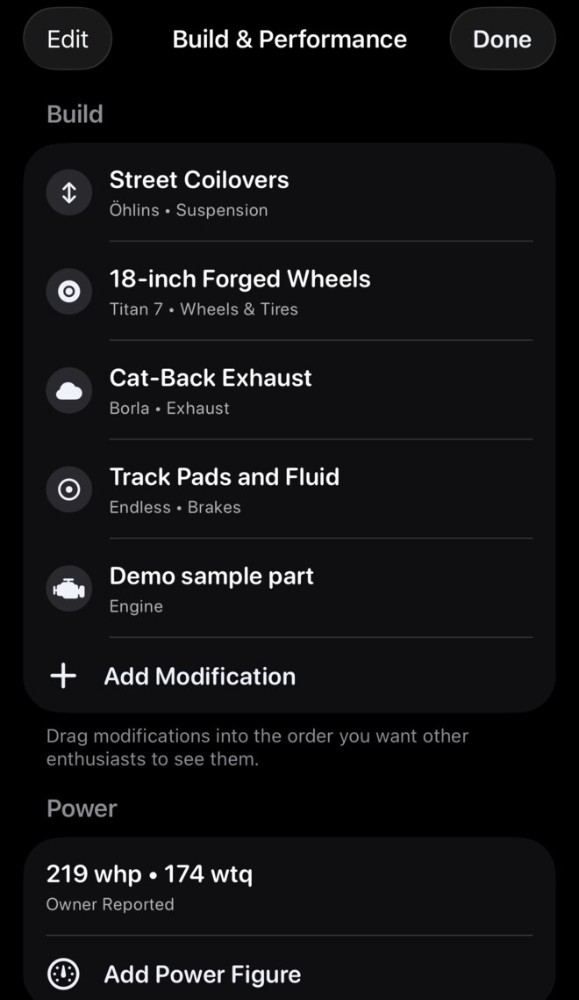
Reopen the record to review it
The reopened local record retained its fictional note and Currently installed off status. Cancel leaves the reopened form unchanged.
The attempted category change did not visibly replace Engine, so category changes remain unverified. Real-account persistence was not tested.

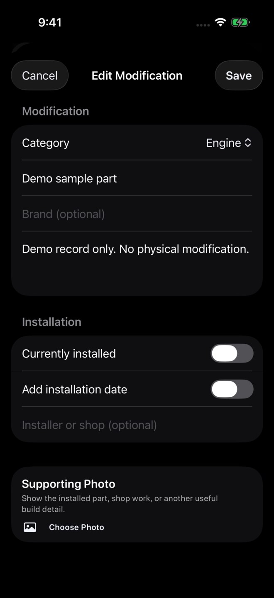
Move around your profile
Tap or swipe between Pulse, Garage, and Groups. Use Pulse filters to narrow profile posts, and tap Attended, Hosted, or Connections to open that history or list. Each tab keeps its own place as you move between them.
A joined month and year, when available, indicates when the Idle profile was created. It does not indicate verification or a paid membership.
Troubleshooting
- Wrong primary vehicle appearsCheck which vehicle is marked Primary.
- Fuel settings look wrongOpen the vehicle and review the saved values before blend planning.
- Build details are missingOpen the vehicle again and refresh your garage. Build & Performance may not be available in every version.
- Style option is lockedRestore purchases or choose a style included with your current account.
- Location still appearsReview Show city in Privacy & Safety, refresh the profile, and contact support if it still appears where it should be hidden.
- Photo did not updateConfirm Photos permission is enabled, then try again.
- Vehicle missing from the listSend the year, make, model, and trim through Requests.
A fictional profile name and Build record were saved and reopened locally. Vehicle creation, photos, primary-vehicle changes, privacy enforcement, membership eligibility, purchase/restore, and real-account saves remain unverified. The fuel guide separately documents a locally saved calculator capacity.
Privacy
Review your Idle privacy settings if you want to control what profile details are visible. You can also read the Privacy Policy.